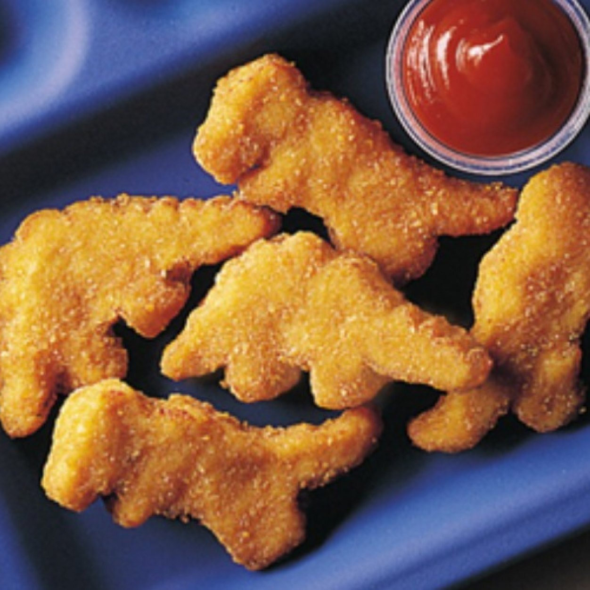

Dino-Nuggies

Description
Ah yes, the classic dino nugget... crispy on the outside yet delectably juicy inside. Need more be said?
Ingredients
- Cheez-its (crushed)
- 1 egg yolk (beaten)
- Dinosaur meat (tenderized)
- vegetable oil
Directions
- Rinse dino pieces with cold water and pat dry with paper towels. Cut into 1x1x1/2 inch pieces.
- Fill a deep fryer with vegetable oil, no more than 1/3 full. Heat to medium heat.
- Place egg and water in a small bowl and mix well. Add the cheeze-it flour and seasonings, stirring until a smooth batter is formed.
- Dip chicken pieces in batter and drain off any excess. Add battered dino, a few pieces at a time, to the hot oil. Fry about 4 minutes or until golden brown and done (remove dino from oil to test). Drain on paper towels.